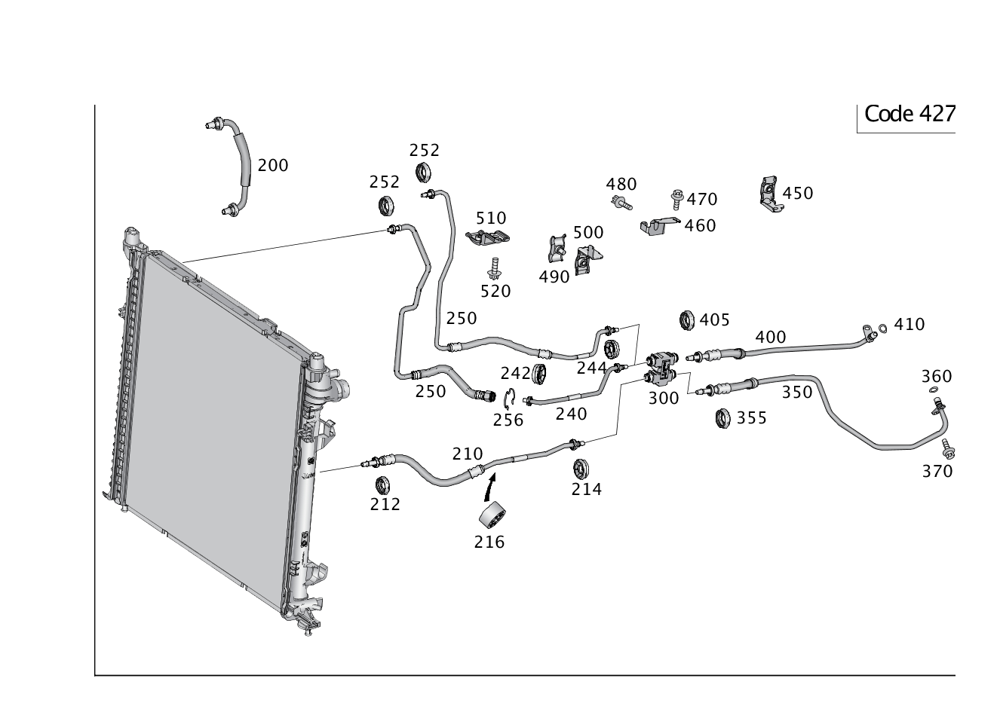

| № | Артикул | Название | Кол. | Примечание | Ограничение |
|---|---|---|---|---|---|
| 200 | A 166 500 56 72 | Маслопровод (GETRIEBEOELKUEHLERLEITUNG) | 1 | К радиатору | M278/M642/M276+M002 |
| 210 | A 166 500 05 72 | Маслопровод (GETRIEBEOELKUEHLERLEITUNG) | 1 | МЕСТО РАЗЪЕДИНЕНИЯ К ТЕРМОСТАТУ | M278+427 |
| 212 | A 000 998 36 23 | - Защитный колпачок (SCHUTZKAPPE) | 1 | НА МАСЛОПРОВОДЕ | M278/M157 |
| 212 | A 000 998 84 23 | - Пылезащитный колпачок (STAUBSCHUTZKAPPE) | 1 | НА МАСЛОПРОВОДЕ | M278/M157 |
| 214 | A 000 998 83 23 | - Пылезащитный колпачок (STAUBSCHUTZKAPPE) | 1 | К маслопроводу | 421/427+-(M276) |
| 216 | A 116 466 12 82 | - Резиновое кольцо (GUMMIRING) | 1 | НА МАСЛОПРОВОДЕ | M278/M157 |
| 240 | A 166 500 78 72 | Маслопровод (GETRIEBEOELKUEHLERLEITUNG) | 1 | МЕСТО РАЗЪЕДИНЕНИЯ К ТЕРМОСТАТУ | M278+427 |
| 242 | A 000 998 83 23 | - Пылезащитный колпачок (STAUBSCHUTZKAPPE) | 2 | К маслопроводу | FC+(M278/M157)+427/(FW/FV)+((M642/M651)/M157/M276+M35)+427 |
| 242 | A 000 998 83 23 | - Пылезащитный колпачок (STAUBSCHUTZKAPPE) | 1 | НА МАСЛОПРОВОДЕ | M278+427 |
| 244 | A 000 998 83 23 | - Пылезащитный колпачок (STAUBSCHUTZKAPPE) | 1 | НА МАСЛОПРОВОДЕ | M278+427 |
| 250 | A 166 500 77 72 | Маслопровод (GETRIEBEOELKUEHLERLEITUNG) | 1 | ОТ РАДИАТОРА К РАЗЪЁМУ [402] БОЛЬШЕ НЕ ПОСТАВЛЯЕТСЯ | M278+427 |
| 252 | A 000 998 36 23 | - Защитный колпачок (SCHUTZKAPPE) | 1 | Трубопровод масляного охладителя | M276+M002+427/M278+427 |
| 252 | A 000 998 84 23 | - Пылезащитный колпачок (STAUBSCHUTZKAPPE) | 1 | Трубопровод масляного охладителя | M276+M002+427/M278+427 |
| 256 | A 000 993 13 02 | - Стопорная пружина (RASTFEDER) | 1 | К маслопроводу 3/8" | 421/427 |
| 300 | A 164 501 02 65 | Термостат (THERMOSTAT) | 1 | Охлаждение масла коробки передач | 427 |
| 350 | A 166 500 44 72 | Маслопровод (GETRIEBEOELKUEHLERLEITUNG) | 1 | КП, СЗАДИ СЛЕВА [402] БОЛЬШЕ НЕ ПОСТАВЛЯЕТСЯ | M278+427 |
| 355 | A 000 998 84 23 | - Пылезащитный колпачок (STAUBSCHUTZKAPPE) | 1 | К маслопроводу | 427 |
| 360 | A 019 997 58 45 | - Кольцевая прокладка (O-RING) | 2 | МАСЛОПРОВОД СЛЕВА | M278+427/M157 |
| 370 | N 000000 001116 | Винт с 6-гр. глвк (SECHSRUNDSCHRAUBE) | 2 | Маслопровод слева и справа к картеру гидротрансформатора; M6X19 | 427 |
| 400 | A 166 500 03 72 | Маслопровод (GETRIEBEOELKUEHLERLEITUNG) | 1 | КП, СЗАДИ СПРАВА [402] БОЛЬШЕ НЕ ПОСТАВЛЯЕТСЯ | M278+427/M157 |
| 405 | A 000 998 84 23 | - Пылезащитный колпачок (STAUBSCHUTZKAPPE) | 1 | НА МАСЛОПРОВОДЕ | M278+427/M157 |
| 410 | A 019 997 58 45 | - Кольцевая прокладка (O-RING) | 2 | МАСЛОПРОВОД СПРАВА | M278+427/M157 |
| 450 | A 166 501 08 20 | Держатель (HALTER) | 1 | КРЕПЛЕНИЕ МАСЛОПРОВОДОВ КОРОБКИ ПЕРЕДАЧ, СЗАДИ | M278+427/M157 |
| 460 | A 166 501 00 20 | Держатель (HALTER) | 1 | Термостат | M278/M651/M157 |
| 470 | N 000000 001114 | Винт с 6-гр. глвк (SECHSRUNDSCHRAUBE) | 1 | Держатель к масляному поддону; M6X15 | 427 |
| 480 | N 000000 001475 | Винт с 6-гр. глвк (SECHSRUNDSCHRAUBE) | 1 | Термостат к держателю термостата; M6X12 | 427 |
| 490 | A 000 995 20 32 | хомут (SCHELLE) | 2 | Маслопровод к держателю | 427+-M157 |
| 510 | A 166 501 01 20 | Держатель (HALTER) | 1 | КРЕПЛЕНИЕ МАСЛОПРОВОДОВ КОРОБКИ ПЕРЕДАЧ, СПЕРЕДИ | M278+427/M157 |
| 510 | A 166 501 00 00 | Держатель (HALTER) | 1 | Крепление маслопроводов коробки передач, спереди | M278+(427/421) |
| 520 | N 000000 001116 | Винт с 6-гр. глвк (SECHSRUNDSCHRAUBE) | 2 | Крепление держателя; M6X19 | M278+427/M278+421 |
| 600 | A 166 500 56 72 | Маслопровод (GETRIEBEOELKUEHLERLEITUNG) | 1 | К радиатору | M278/M642/M276+M002 |
| 610 | A 166 500 02 88 | Маслопровод (GETRIEBEOELKUEHLERLEITUNG) | 1 | Термостат к радиатору | M278+421 |
| 612 | A 000 998 84 23 | - Пылезащитный колпачок (STAUBSCHUTZKAPPE) | 1 | К маслопроводу | M278+421/M276+M002+421 |
| 614 | A 001 998 09 23 | - Пылезащитный колпачок (STAUBSCHUTZKAPPE) | 1 | К маслопроводу | M278+421/M276+M002+421 |
| 616 | A 116 466 12 82 | - Резиновое кольцо (GUMMIRING) | 1 | НА МАСЛОПРОВОДЕ | M278/M157 |
| 640 | A 166 500 94 72 | Маслопровод (GETRIEBEOELKUEHLERLEITUNG) | 1 | Разъем к термостату | M278+421 |
| 642 | A 001 998 09 23 | - Пылезащитный колпачок (STAUBSCHUTZKAPPE) | 1 | К маслопроводу | M278+421 |
| 644 | A 001 998 10 23 | - Пылезащитный колпачок (STAUBSCHUTZKAPPE) | 1 | К маслопроводу | M278+421 |
| 650 | A 166 500 93 72 | Маслопровод (GETRIEBEOELKUEHLERLEITUNG) | 1 | От радиатора к разъему | M278+421 |
| 652 | A 000 998 83 23 | - Пылезащитный колпачок (STAUBSCHUTZKAPPE) | 1 | К маслопроводу | M278+421 |
| 656 | A 000 993 13 02 | - Стопорная пружина (RASTFEDER) | 1 | К маслопроводу 3/8" | 421/427 |
| 656 | A 000 993 28 02 | - Стопорная пружина (RASTFEDER) | 1 | К маслопроводу; 1/2 ZOLL | M278+421/M276+421 |
| 700 | A 166 501 02 65 | Термостат маслоохладителя (OELKUEHLERTHERMOSTAT) | 1 | Охлаждение масла коробки передач | 421 |
| 750 | A 166 500 01 88 | Маслопровод (GETRIEBEOELKUEHLERLEITUNG) | 1 | Коробка передач к термостату | M278+421 |
| 755 | A 001 998 09 23 | - Пылезащитный колпачок (STAUBSCHUTZKAPPE) | 1 | К маслопроводу | (M276+M002/M278)+421 |
| 760 | A 001 998 09 23 | - Пылезащитный колпачок (STAUBSCHUTZKAPPE) | 1 | К маслопроводу | (M276+M002/M278)+421 |
| 800 | A 166 500 03 88 | Маслопровод (GETRIEBEOELKUEHLERLEITUNG) | 1 | Коробка передач, сзади справа | M278+421 |
| 805 | A 001 998 10 23 | - Пылезащитный колпачок (STAUBSCHUTZKAPPE) | 3 | К маслопроводу | 421 |
| 850 | A 166 501 50 20 | Держатель (HALTER) | 1 | Крепление маслопроводов коробки передач, сзади | (M276/M278)+421 |
| 860 | A 166 501 60 20 | Держатель (HALTER) | 1 | Термостат | M278+421 |
| 870 | N 000000 001114 | Винт с 6-гр. глвк (SECHSRUNDSCHRAUBE) | 2 | Держатель к масляному поддону; M6X15 | 421 |
| 880 | N 000000 001480 | Винт с 6-гр. глвк (SECHSRUNDSCHRAUBE) | 1 | Термостат к держателю термостата | 421 |
| 890 | A 003 995 09 01 | Крепежный хомут (BEFESTIGUNGSSCHELLE) | 1 | Маслопровод к держателю | M278+421 |
| 890 | A 003 995 09 01 | Крепежный хомут (BEFESTIGUNGSSCHELLE) | 1 | Трубопровод к держателю | (M276/M278/M651)+421 |
| 895 | N 000000 001116 | - Винт с 6-гр. глвк (SECHSRUNDSCHRAUBE) | 1 | К хомуту маслопровода; M6X19 | 421/ME05 |
| 910 | A 166 501 01 20 | Держатель (HALTER) | 1 | КРЕПЛЕНИЕ МАСЛОПРОВОДОВ КОРОБКИ ПЕРЕДАЧ, СПЕРЕДИ | M278+427/M157 |
| 910 | A 166 501 00 00 | Держатель (HALTER) | 1 | Крепление маслопроводов коробки передач, спереди | M278+(427/421) |
| 920 | N 910143 006000 | Винт с 6-гр. глвк (SECHSRUNDSCHRAUBE) | 1 | Держатель к корпусу коробки передач, сверху; M6X12 | M278+421 |
| 920 | N 000000 001116 | Винт с 6-гр. глвк (SECHSRUNDSCHRAUBE) | 2 | Крепление держателя; M6X19 | M278+427/M278+421 |
| 920 | N 000000 001114 | Винт с 6-гр. глвк (SECHSRUNDSCHRAUBE) | 1 | Держатель к колоколу коробки передач; M6X15 | (M276+M002/M278)+421 |
| 920 | N 000000 001114 | Винт с 6-гр. глвк (SECHSRUNDSCHRAUBE) | 2 | Держатель к корпусу коробки передач, сверху; M6X15 | M278+421 |
| 950 | A 725 270 56 05 | Масляный фильтр КП | 1 | К коробке передач [417] БОЛЬШЕ НЕ ПОСТАВЛЯЕТСЯ, ЗАКАЗЫВАТЬ КОМПЛЕКТ ПОСТАВКИ [402] БОЛЬШЕ НЕ ПОСТАВЛЯЕТСЯ [003913] НАПОРНЫЙ МАСЛЯНЫЙ ФИЛЬТР НЕ УСТАНАВЛИВАЕТСЯ/БОЛЬШЕ НЕ ПОСТАВЛЯЕТСЯ. ДЛЯ А/М С КОДОМ 174 (НАПОРНЫЙ МАСЛЯН. ФИЛЬТР) ТРУБОПРОВОД МАСЛЯНОГО РАДИАТОРА КОРОБКИ ПЕРЕДАЧ (ПОДВОДЯЩИЙ) СЛЕДУЕТ ЗАКАЗЫВАТЬ И ЗАМЕНЯТЬ В СООТВЕТСТВИИ С АКТУАЛЬНОЙ ВЕРСИЕЙ ДАННЫХ EPC. | (M642/M276/M278/M651)+421+174 |
| 960 | A 166 500 08 00 | - Маслопровод (GETRIEBEOELKUEHLERLEITUNG) | 1 | К масляному фильтру [003913] НАПОРНЫЙ МАСЛЯНЫЙ ФИЛЬТР НЕ УСТАНАВЛИВАЕТСЯ/БОЛЬШЕ НЕ ПОСТАВЛЯЕТСЯ. ДЛЯ А/М С КОДОМ 174 (НАПОРНЫЙ МАСЛЯН. ФИЛЬТР) ТРУБОПРОВОД МАСЛЯНОГО РАДИАТОРА КОРОБКИ ПЕРЕДАЧ (ПОДВОДЯЩИЙ) СЛЕДУЕТ ЗАКАЗЫВАТЬ И ЗАМЕНЯТЬ В СООТВЕТСТВИИ С АКТУАЛЬНОЙ ВЕРСИЕЙ ДАННЫХ EPC. | (M642/M276/M278/M651)+421+174 |
| 970 | A 000 995 51 14 | - Крепеж (трубо)провода (LEITUNGSBEFESTIGER) | 2 | [003913] НАПОРНЫЙ МАСЛЯНЫЙ ФИЛЬТР НЕ УСТАНАВЛИВАЕТСЯ/БОЛЬШЕ НЕ ПОСТАВЛЯЕТСЯ. ДЛЯ А/М С КОДОМ 174 (НАПОРНЫЙ МАСЛЯН. ФИЛЬТР) ТРУБОПРОВОД МАСЛЯНОГО РАДИАТОРА КОРОБКИ ПЕРЕДАЧ (ПОДВОДЯЩИЙ) СЛЕДУЕТ ЗАКАЗЫВАТЬ И ЗАМЕНЯТЬ В СООТВЕТСТВИИ С АКТУАЛЬНОЙ ВЕРСИЕЙ ДАННЫХ EPC. | (M642/M276/M278/M651)+421+174 |
| 980 | N 000000 001114 | Винт с 6-гр. глвк (SECHSRUNDSCHRAUBE) | 2 | Крепление масляного фильтра коробки передач к коробке передач; M6X15 [003913] НАПОРНЫЙ МАСЛЯНЫЙ ФИЛЬТР НЕ УСТАНАВЛИВАЕТСЯ/БОЛЬШЕ НЕ ПОСТАВЛЯЕТСЯ. ДЛЯ А/М С КОДОМ 174 (НАПОРНЫЙ МАСЛЯН. ФИЛЬТР) ТРУБОПРОВОД МАСЛЯНОГО РАДИАТОРА КОРОБКИ ПЕРЕДАЧ (ПОДВОДЯЩИЙ) СЛЕДУЕТ ЗАКАЗЫВАТЬ И ЗАМЕНЯТЬ В СООТВЕТСТВИИ С АКТУАЛЬНОЙ ВЕРСИЕЙ ДАННЫХ EPC. | (M642/M276/M278/M651)+421+174 |
Позиций: 65 · подписано на схемах: 65 · колесо — плавный зум в курсор, перетаскивание — пан, двойной клик — зум, клик по артикулу — скопировать.